See It In Action
TuiMon renders directly inside your terminal — including the VS Code integrated terminal. No browser tabs, no separate windows. Your dashboards live right next to your code, so you never need to leave your IDE.
Live API Dashboard
A full production dashboard with stats, traffic charts, service health, event logs, and endpoint distribution — all rendered in a VS Code terminal panel while you code.
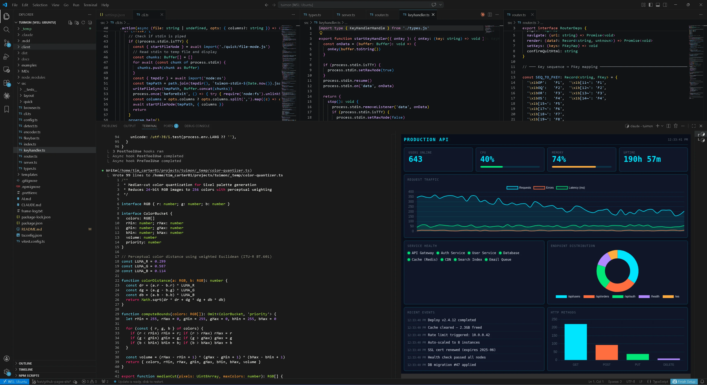
Nginx Access Log Analysis
Point TuiMon at an access log and get an instant request table with color-coded status codes, all inside your editor. No log viewer needed.
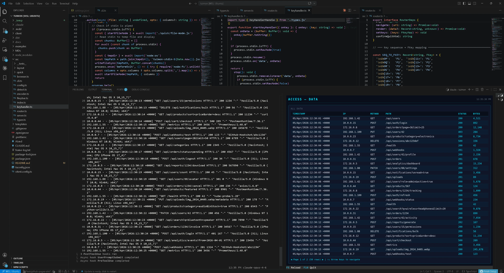
tuimon access.log rendering a request table directly in VS Code — never leave your IDEEverything You Need
TuiMon bridges web development and terminal UIs. Write dashboards with the tools you already know — HTML, CSS, JavaScript, Chart.js, D3 — and render them pixel-perfect in any modern terminal.
HTML/CSS/JS Dashboards
Write normal web pages. Use flexbox, grid, Chart.js, D3 — anything that runs in Chromium. TuiMon screenshots and streams to your terminal.
Declarative Config
Skip the HTML. Define widgets in TypeScript — stats, gauges, line charts, event logs — and TuiMon generates the dashboard for you.
Zero-Config Quick Mode
Point at a JSON, CSV, or log file and get an instant dashboard. Auto-detects format, builds charts, watches for changes.
Database Viewer
Query MongoDB, PostgreSQL, MySQL, or SQLite directly from your terminal. Uses your project's existing drivers — no new dependencies.
Built-in Presets
Ready-made dashboards for Docker containers, Git stats, process monitoring, and dependency analysis. Just run and go.
Keyboard Navigation
F-keys for actions, letter shortcuts for pages, ESC to go back. Full keyboard control with a status bar showing available bindings.
Quick Start
Install TuiMon
npm install -g tuimonRequires Node.js 20+ and a terminal with graphics support (Kitty, iTerm2, WezTerm, Ghostty, or VSCode).
Scaffold a project
tuimon init
tuimon startCreates a starter dashboard with overview, CPU detail, and memory detail pages. Renders immediately.
Or just point at data
# Visualize any file instantly
tuimon data.json
tuimon sales.csv
tuimon access.log
# Watch a data source
tuimon watch metrics.js
tuimon watch --url http://localhost:3000/metrics
# Built-in dashboards
tuimon docker
tuimon git
tuimon psCustom HTML Dashboards
Build dashboards with standard web technologies. TuiMon auto-injects a client script that receives live data updates. Use any charting library, any CSS framework, any JavaScript you want.
<div style="display: grid; grid-template-columns: 1fr 1fr; gap: 20px; padding: 20px;">
<div>
<h3>CPU Usage</h3>
<canvas id="cpuChart"></canvas>
</div>
<div id="memValue" style="font-size: 48px;">--</div>
</div>
<script>
// Receive live data from TuiMon
TuiMon.onUpdate(function(data) {
TuiMon.set('#memValue', data.memory + '%')
updateChart(data.cpu)
})
</script>Configure pages, shortcuts, and F-key bindings in tuimon.config.ts:
export default {
pages: {
overview: { html: './pages/overview.html', default: true },
cpu: { html: './pages/cpu-detail.html', shortcut: 'g', label: 'CPU Detail' },
memory: { html: './pages/memory-detail.html', shortcut: 'm', label: 'Memory' },
},
refresh: 1000,
data: async () => ({
cpu: getCpuPercent(),
memory: getMemPercent(),
uptime: process.uptime(),
}),
keys: {
F5: { label: 'Refresh', action: async () => dash.render(await getData()) },
F10: { label: 'Quit', action: () => process.exit(0) },
},
}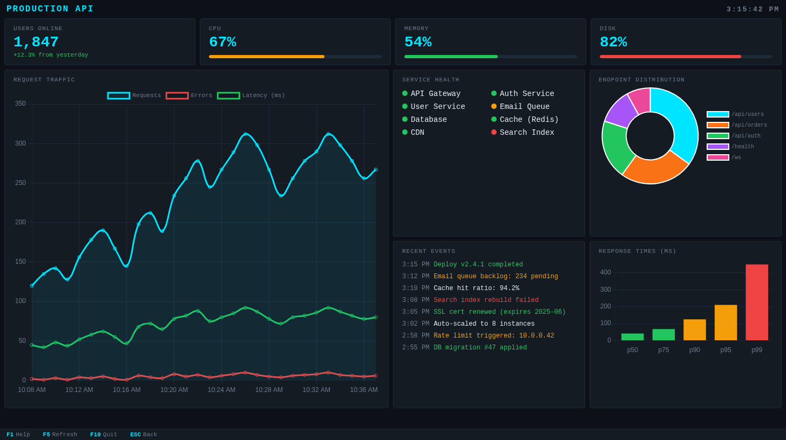
Declarative Mode
Don't want to write HTML? Define your dashboard entirely in TypeScript. TuiMon generates a dark-themed dashboard with the widgets you specify.
import tuimon from 'tuimon'
const dash = await tuimon.start({
layout: {
title: 'Production API',
stats: [
{ id: 'users', label: 'Users Online', type: 'stat' },
{ id: 'cpu', label: 'CPU', type: 'gauge' },
{ id: 'memory', label: 'Memory', type: 'gauge' },
],
panels: [
{ id: 'traffic', label: 'Traffic', type: 'line', span: 2 },
{ id: 'services', label: 'Services', type: 'status-grid' },
{ id: 'endpoints', label: 'Endpoints', type: 'doughnut' },
{ id: 'events', label: 'Events', type: 'event-log', throttle: 2000 },
{ id: 'latency', label: 'Response Times', type: 'bar' },
],
},
refresh: 500,
data: () => ({
users: 1847,
cpu: 67,
memory: 54,
traffic: { Requests: 312, Errors: 10, 'Latency (ms)': 80 },
services: ['API Gateway', 'Auth Service', 'Database', 'CDN'],
endpoints: { '/api/users': 35, '/api/orders': 25, '/api/auth': 20 },
events: ['Deploy v2.4.1 completed'],
latency: { p50: 42, p75: 68, p90: 125, p95: 210, p99: 450 },
}),
})Smart data format — just send what you have. TuiMon figures out the rest:
42→ stat card73(for gauge widget) → percentage bar{ Requests: 340, Errors: 12 }→ auto-accumulating line chart['Deploy completed']→ timestamped event log['Node-1', 'Node-2']→ status grid with health indicators
Quick Mode — Zero Config
Point TuiMon at any file and get an instant dashboard. It auto-detects the format, parses the data, builds an appropriate layout, and watches for changes.
tuimon data.json
JSON or JSONL → table + charts from data shape
tuimon sales.csv
CSV/TSV → table + bar/line/doughnut charts
tuimon access.log
Nginx logs → request stats, status codes, endpoints
tuimon modsec.log
ModSecurity → attack dashboard, severity, top rules
tuimon results.xml
JUnit XML → test results and coverage dashboard
tuimon watch metrics.js
JS/TS module → call your function on interval
JSON File Visualization
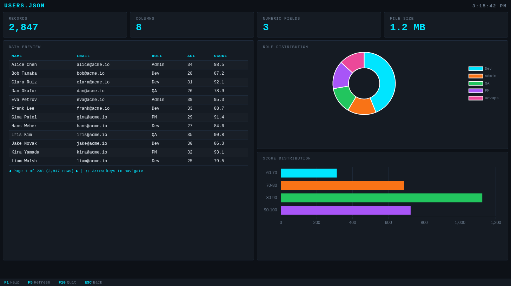
tuimon users.json — auto-detected table with role distribution and score histogramCSV File Visualization
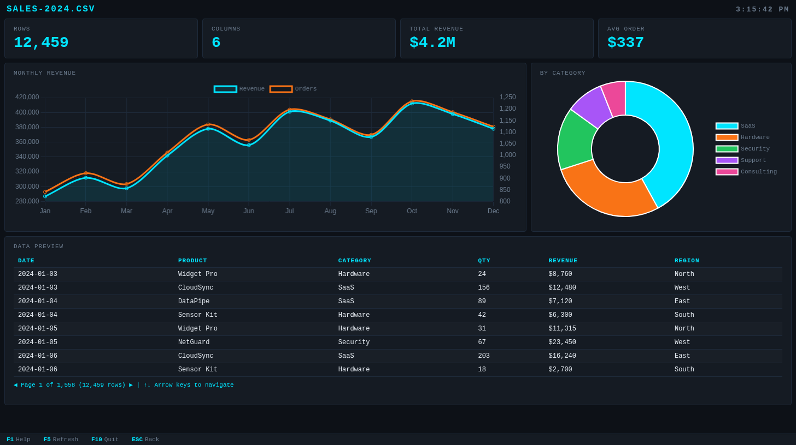
tuimon sales-2024.csv — monthly revenue trends, category breakdown, and data previewLog File Analysis
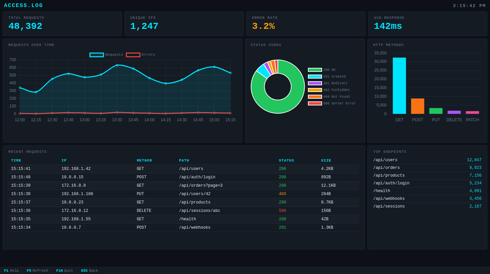
tuimon access.log — request timeline, status code breakdown, HTTP methods, and top endpointsBuilt-in Presets
Ready-made dashboards for common developer tasks. No configuration, no data files — just run the command.
Docker Dashboard
Live container stats with CPU/memory charts, status grid, and event log. Press L for container logs.
tuimon docker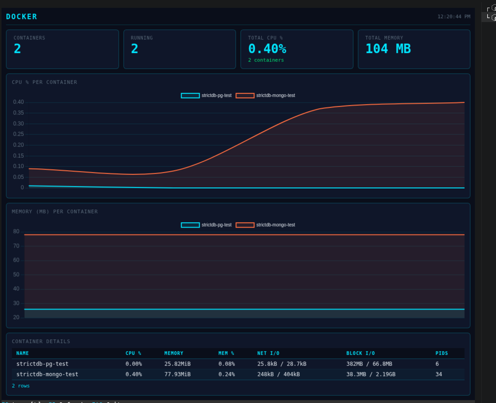
Git Repository Analysis
Commit frequency, top contributors, most changed files, and recent commit log.
tuimon git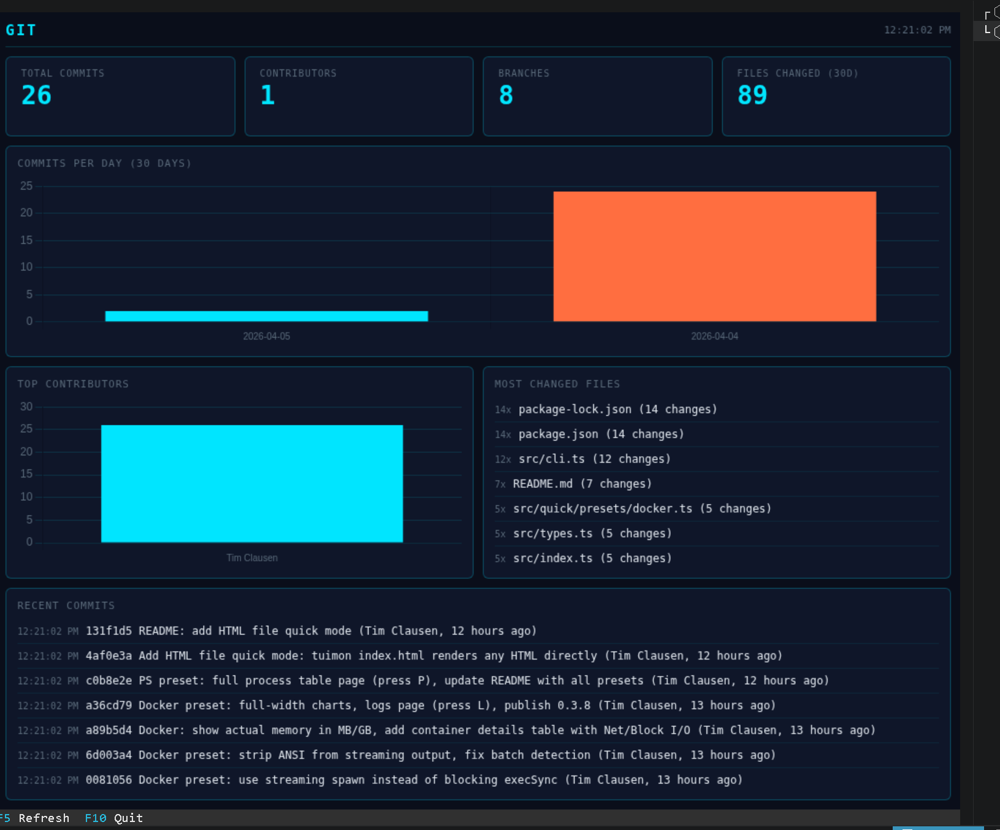
Process Monitor
Live system stats with top CPU/memory processes, load averages, and process table.
tuimon ps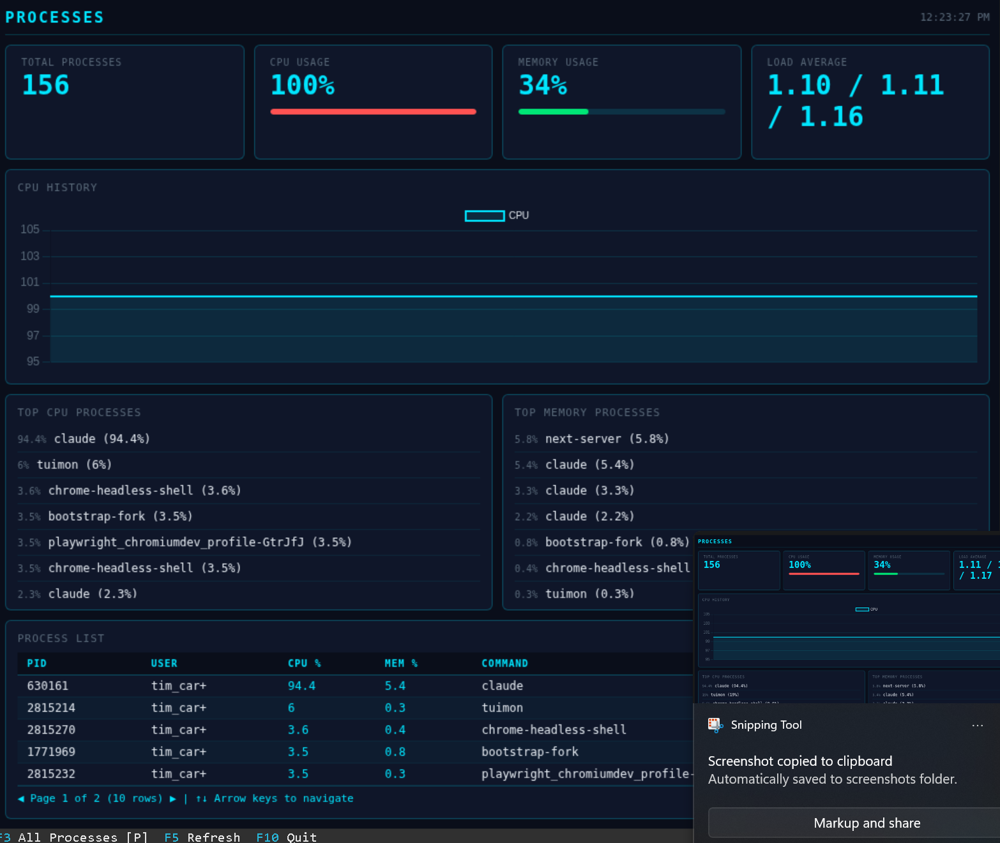
Dependency Analysis
Analyze package-lock.json, yarn.lock, or pnpm-lock.yaml. Shows total deps, duplicates, version conflicts.
tuimon package-lock.json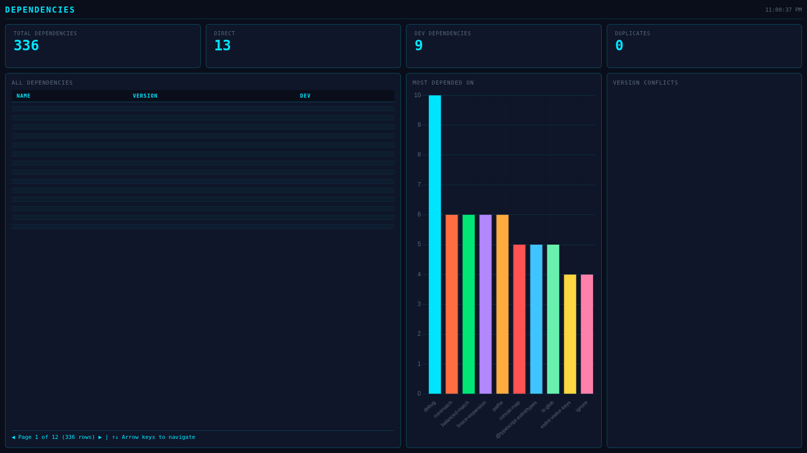
Database Viewer
View database tables directly in your terminal. TuiMon auto-detects your project's database driver from node_modules/ and reads the connection string from .env. No new dependencies needed.
# View a table
tuimon db users
# Custom queries
tuimon db "SELECT * FROM users WHERE active = true"
tuimon db users --query '{"active": true}' # MongoDB
# Connection options
tuimon db users --uri "mongodb://localhost:27017/myapp"
tuimon db users --env MY_DB_URI
# Live watch mode
tuimon db users --watch
tuimon db users --watch --interval 5000Supported databases: MongoDB, PostgreSQL, MySQL, SQLite
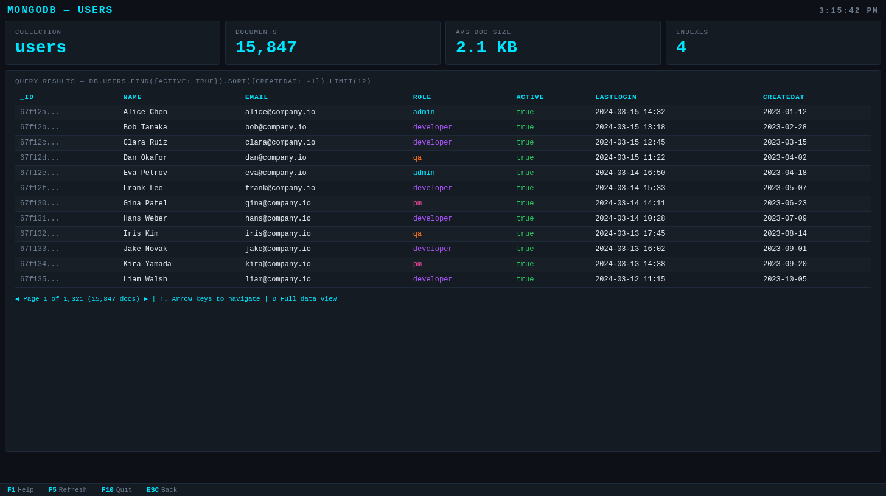
tuimon db users — MongoDB collection with query results, pagination, and keyboard navigationKeyboard Control
TuiMon uses native terminal stdin for keyboard handling. No terminal UI frameworks needed. The F-key status bar at the bottom shows available bindings for the current page.
Custom F-Key Bindings
keys: {
F1: { label: 'Help', action: () => showHelp() },
F5: { label: 'Refresh', action: async () => dash.render(await getData()) },
F9: { label: 'Export', action: () => exportCSV() },
F10: { label: 'Quit', action: () => process.exit(0) },
}Page Shortcuts
Assign single-letter shortcuts to pages for instant navigation:
pages: {
overview: { html: './overview.html', default: true },
cpu: { html: './cpu.html', shortcut: 'g', label: 'CPU Detail' },
memory: { html: './memory.html', shortcut: 'm', label: 'Memory' },
network: { html: './network.html', shortcut: 'n', label: 'Network' },
}Terminal Support
TuiMon auto-detects your terminal's graphics protocol. No configuration needed.
| Terminal | Protocol | Status |
|---|---|---|
| Kitty | Kitty | Supported |
| Ghostty | Kitty | Supported |
| WezTerm | Kitty | Supported |
| iTerm2 | iTerm2 | Supported |
| VSCode Terminal | Sixel | Supported |
| mlterm | Sixel | Supported |
VSCode users: Run tuimon init to automatically enable terminal.integrated.enableImages: true in your workspace settings.
Run tuimon check to verify your terminal supports graphics protocols and see detected pixel dimensions.
Widget Types
Eight built-in widget types for declarative dashboards. Each accepts simple data and renders automatically.
Per-Widget Throttle
Each widget can update at its own speed. High-frequency data (charts) updates every frame while slow-changing data (status, events) throttles independently.
panels: [
{ id: 'chart', type: 'line' }, // every frame
{ id: 'events', type: 'event-log', throttle: 2000 }, // max every 2s
{ id: 'health', type: 'status-grid', throttle: 5000 },// max every 5s
]API Reference
Programmatic API
import tuimon from 'tuimon'
// Start returns a dashboard handle
const dash = await tuimon.start({
pages: { ... }, // Page definitions
layout: { ... }, // Or declarative layout (no pages needed)
data: () => ({ ... }), // Data provider function
refresh: 500, // Auto-refresh interval (ms)
renderDelay: 100, // Delay before screenshot after data push
})
// Push data manually
await dash.render({
cpu: 73,
memory: 54,
requests: 312,
})
// Graceful shutdown
await dash.stop()Client-Side API
The TuiMon object is auto-injected into every served HTML page:
// Listen for data updates
TuiMon.onUpdate(function(data) {
document.getElementById('cpu').textContent = data.cpu + '%'
})
// Set element values by selector
TuiMon.set('#memory', '54%')
TuiMon.set('#status', { textContent: 'OK', style: 'color: green' })
// Show temporary notification in F-key bar
TuiMon.notify('Data exported!', 3000)Data Attributes
Add keyboard shortcut badges to HTML elements automatically:
<!-- Shows [G] badge on the panel -->
<div data-tm-key="g" data-tm-label="CPU Detail">
CPU Usage: 73%
</div>CLI Commands
tuimon start
Start dashboard from tuimon.config.ts
tuimon init
Scaffold a starter dashboard project
tuimon check
Verify terminal graphics support
tuimon <file>
Quick-visualize JSON, CSV, or log files
tuimon watch <file|--url>
Watch JS module or poll HTTP endpoint
tuimon db <table>
Query and browse database tables
tuimon docker
Live Docker container dashboard
tuimon git
Git repository statistics
tuimon ps
Live process monitor
tuimon config
View or set global configuration
tuimon ai
Print AI integration guide